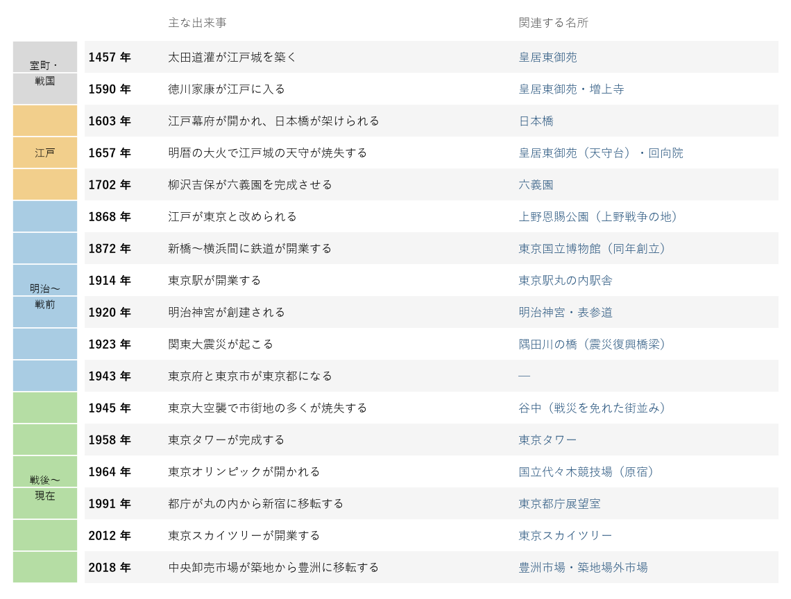
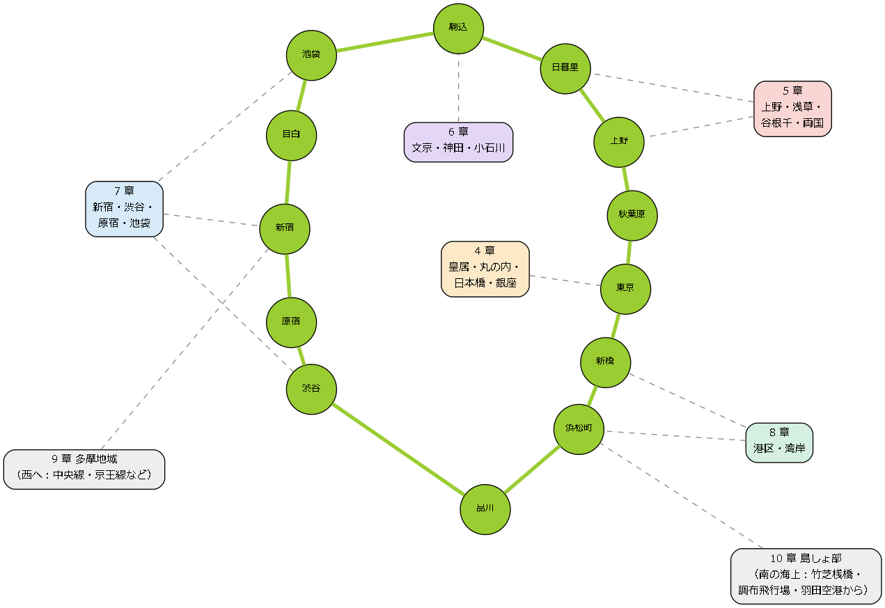

2. 東京の名所の全体像
この章では、名所の紹介に入る前に、東京の地域区分と歴史の流れを確認し、本書で扱うエリアの位置関係をつかむ。名所がなぜその場所にあるのかを知っておくと、個々の名所の由来も理解しやすくなる。
2.1. 東京の地域区分
東京都は、23 の特別区（23 区）、26 の市と西多摩郡の 3 町 1 村からなる多摩地域、伊豆諸島と小笠原諸島からなる島しょ部の 3 つに大きく分けられる。
地域 |
範囲 |
名所の特徴 |
|---|---|---|
23 区 |
千代田区、中央区、港区、新宿区、台東区など 23 の特別区 |
江戸城と城下町に由来する寺社や大名庭園、近代の建築、展望施設、湾岸の新しい街など、名所が密集している。 |
多摩地域 |
八王子市、立川市、武蔵野市などの 26 市と、瑞穂町・日の出町・奥多摩町・檜原村 |
東部は住宅地の中に古刹や大きな公園があり、西部は高尾山や奥多摩などの山地である。 |
島しょ部 |
伊豆大島から青ヶ島までの伊豆諸島と、父島・母島などの小笠原諸島 |
火山の島々の景観と、小笠原諸島の固有の生き物が見どころである。 |
23 区の中は、さらに山の手と下町に分けて語られることが多い。山の手は武蔵野台地の東の端にあたる高台で、江戸時代には武家屋敷が多く置かれた。大名庭園の多くが山の手にあるのはこのためである。下町は隅田川や海に近い低地で、町人が住み、商業と職人の町として栄えた。浅草や日本橋、深川がその代表である。現在の東京でも、坂の多い山の手と、川や運河の多い下町とでは街の雰囲気が大きく異なる。
2.2. 歴史の流れと名所
東京の名所の多くは、江戸時代の城下町としての成り立ちと、明治以降の首都としての発展のどちらかに由来する。主な出来事と、それに関係する名所を次の図に示す。

図: 東京の歴史の主な出来事と関連する名所
- 江戸時代
1457 年に太田道灌が築いた江戸城は、1590 年の徳川家康の入城、1603 年の江戸幕府の成立を経て、日本最大の城となった。城の周囲には大名屋敷が並び、その庭園の一部が現在の都立庭園として残っている。また、徳川将軍家の菩提寺である増上寺と寛永寺が城の南と北東に置かれ、浅草寺や神田明神などの寺社は庶民の信仰と行楽の場としてにぎわった。
- 明治から戦前まで
1868 年に江戸は東京と改められ、江戸城は皇居となった。鉄道の開業、東京駅の建設、博物館や大学の設立によって、近代国家の首都としての姿が整えられた。1923 年の関東大震災では市街地の多くが焼け、その復興の過程で隅田川の橋や公園が新たに造られた。
- 戦後から現在まで
1945 年の空襲で東京は再び焼け野原となったが、高度経済成長期に急速に復興した。1958 年の東京タワー、1964 年の東京オリンピックはその象徴である。その後、副都心の新宿に都庁が移り、湾岸の埋め立て地にはお台場や豊洲の新しい街が生まれた。2012 年には東京スカイツリーが開業し、現在も渋谷や日本橋などで大規模な再開発が続いている。
2.3. 本書で扱うエリア
本書では、23 区の名所を 5 つのエリアに分け、多摩地域と島しょ部を加えた 7 つの章で紹介する。23 区のエリアの位置関係を、JR 山手線の主な駅を目印として次の図に示す。

図: 山手線の主な駅と本書で扱うエリア（模式図）
各エリアの特徴は次のとおりである。
章 |
特徴 |
主な名所 |
|---|---|---|
江戸城を中心とする東京の中心部。江戸の名残と近代建築、商業地がそろう。 |
皇居東御苑、東京駅丸の内駅舎、日本橋、浜離宮恩賜庭園 |
|
隅田川の周辺に広がる下町。寺社と門前町、博物館が集まる。 |
浅草寺、上野恩賜公園、東京スカイツリー、谷中 |
|
山の手の高台に大名庭園、学問ゆかりの寺社、大学が並ぶ。 |
小石川後楽園、六義園、湯島天満宮、神田明神 |
|
山手線の西側の副都心。大きな緑地と最先端の街が隣り合う。 |
明治神宮、新宿御苑、渋谷、自由学園明日館 |
|
東京タワーの周辺と、埋め立てによって生まれた湾岸の街。 |
東京タワー、増上寺、お台場、豊洲市場 |
|
都心から 1〜2 時間で行ける郊外と山地。自然と古刹が多い。 |
高尾山、深大寺、昭和記念公園、奥多摩湖 |
|
伊豆諸島と小笠原諸島。船や航空機で渡る。 |
伊豆大島、八丈島、小笠原諸島 |